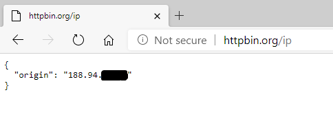
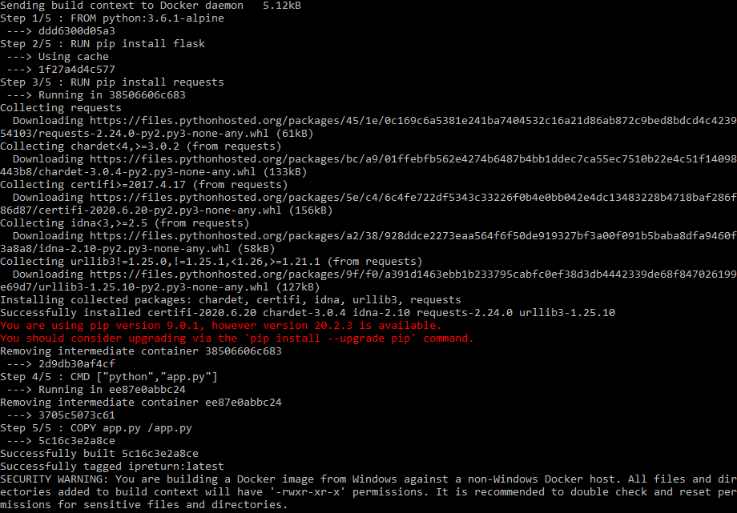
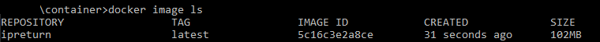
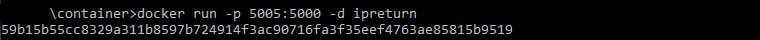
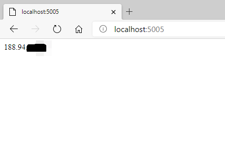
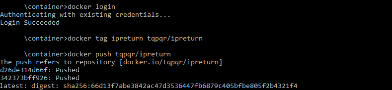

Example containerizing of a Flask app with Docker
The Code
Let's make an app that returns the machine IP address. Our app will be based on "requests" library. It will make a request to http://httpbin.org/ip and get the answer in string format. In browser it looks like that:

To parse this information we will write a small code:
In Flask it will look something like this:
Let's save our code as app.py and prepare the Dockerfile:
Building the image (using the console):
docker image build -t ipreturn .
Let's check out if our image is on its place:
docker image ls
Running the container (with binding the inner port 5000 to external port 5005):
docker run -p 5005:5000 -d ipreturn
Let’s have a look at the result of our work and check out http://localhost:5005/

Now we can push our container to the repository and deploy it anywhere and anytime:
docker login
docker tag ipreturn LOGIN/CONTAINER_NAME
docker push LOGIN/CONTAINER_NAME
